从 rMATS 原始表 → 剪接事件 → 候选新抗原肽 → HLA 结合预测，全程用一套真实公开数据走通
三样东西：一台能上网的电脑、一套 rMATS 结果、一张编码序列对照表。HLA 型别可选。
| 准备项 | 说明 | 必需 |
|---|---|---|
| 浏览器 | Chrome 或 Edge，任意近三年版本 | 必需 |
| rMATS 结果 | SE / A5SS / A3SS / MXE / RI 五个 *.MATS.JC.txt，可以有缺项 | 必需 |
| 编码序列对照表 | 四列：事件 ID、参考 CDS、改变后 CDS、连接点位置。文件名和列名都随意 | 生成肽时必需 |
| HLA 型别 | 如 HLA-A*02:01，可多个 | 可选 |
| 网络 | HLA 预测要走 IEDB 在线服务；不填 HLA 就不需要外网 | 仅预测时 |
本教程用项目自带的真实数据包演示，路径在 E:/EpitopeRank_data/datasets/data_public/peptide_test/，里面有三套等价的输入目录，用来证明"CDS 表叫什么名字、列名写成什么样都能用"：
| 目录 | 编码序列表长什么样 | 用途 |
|---|---|---|
run_input/ | splice_orfs.tsv，标准英文列名 | 标准写法，先跑通这个 |
run_input_free/ | 客户给的_剪接CDS对照表.csv，中文列名 事件ID / 参考序列 / 变异序列 / 连接点 | 演示中文表头 |
run_input_wild/ | 实验原始导出_序列.csv，列名只有 编号 / 位点 / 序列1 / 序列2，且两列序列还是反的 | 演示最难的情况 |
三个目录跑出来的结果完全一样：都是 296 条候选肽。区别只在系统要多花一步去猜列的含义。本教程用最难的 run_input_wild/ 演示，因为只要这个能跑通，其他两种自然没问题。
两种方式，选一种。桌面版适合日常使用，命令行版适合排查问题。
双击 dist\EpitopeRank-Desktop.exe。程序会在本机启动服务并弹出应用窗口（同时可用浏览器访问控制台里打印的地址，形如 http://127.0.0.1:8800/）。关闭窗口即停止服务。
这个 exe 由当前源码打包，界面与本教程截图一致。如果哪一天发现界面比教程旧（比如找不到「确认列的含义」面板），说明手上是旧构建，重跑一次 build.bat 即可——该脚本已会自动清理 __pycache__，避免把旧字节码打进包里。
cd E:\EpitopeRank
venv\Scripts\python.exe serve_ui.py --port 8800
启动成功会打印一段横幅，注意看其中三行：
地址: http://127.0.0.1:8800/
大模型: 已接入 deepseek-flash · AI 解读已启用
浏览器已自动打开；关闭本窗口即可停止服务。
http://127.0.0.1:8800/api/health，返回 {"status":"ok"} 即正常。左侧八个导航，按使用频率分三组。日常只需要用到前三项和「剪接候选新抗原」。
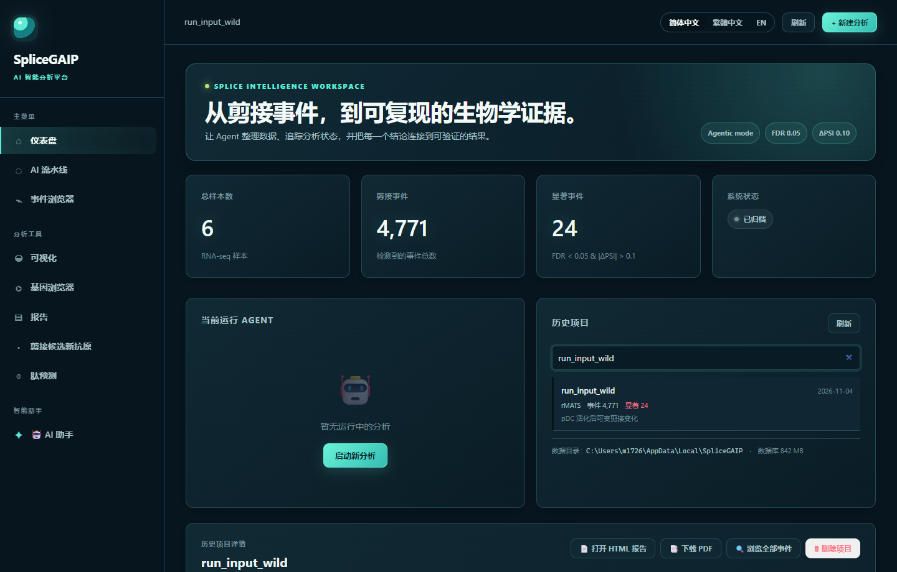
| 导航项 | 你要在什么时候点它 |
|---|---|
| 仪表盘 | 看历史项目、选项目、删项目 |
| AI 流水线 | 分析进行中，想看 6 个 Agent 各自做到哪一步 |
| 事件浏览器 | 按基因 / 事件 ID 查具体剪接事件，导出清单 |
| 可视化 | 火山图、瀑布图、热图等 13 张科研图 |
| 基因浏览器 | 输入 TP53 这类基因符号，一次看齐它的所有事件 |
| 报告 | 生成 HTML / PDF 报告，用于交付 |
| 剪接候选新抗原 | 生成候选肽 + HLA 预测（本教程第 5 步） |
| 肽预测 | 手上已有一批肽段，只想做 HLA 结合预测 |
| AI 助手 | 聊天提问、配置大模型、调用 MCP 工具 |
右上角三个按钮：简体中文 切换界面语言、刷新 重新拉取项目列表、+ 新建分析 开始一个新项目。
把要用的文件放进同一个文件夹。系统不要求固定文件名，但 rMATS 的五个表必须保持官方名字。
以 E:/EpitopeRank_data/datasets/data_public/peptide_test/run_input_wild/ 为例，目录内容如下：
run_input_wild/
├── SE.MATS.JC.txt 1882 个外显子跳跃事件
├── A5SS.MATS.JC.txt 455 个 5' 可变剪接位点
├── A3SS.MATS.JC.txt 685 个 3' 可变剪接位点
├── MXE.MATS.JC.txt 331 个互斥外显子
├── RI.MATS.JC.txt 1418 个内含子滞留
├── sample_metadata.tsv 6 个样本的分组（3 活化 vs 3 对照）
└── 实验原始导出_序列.csv ★ 编码序列对照表（名字随意）
rMATS 五个表必须用官方文件名（SE.MATS.JC.txt 等），因为系统靠文件名区分事件类型。少几个也可以，比如只做 SE 就只放 SE.MATS.JC.txt。
sample_metadata.tsv 是可选的，但强烈建议放，否则分组比较和样本相关图表出不来：
sample_id group condition tissue batch
SRR1 activated infected pDC b1
SRR2 activated infected pDC b1
SRR3 activated infected pDC b1
SRR4 control mock pDC b1
SRR5 control mock pDC b1
SRR6 control mock pDC b1
编码序列表反而没有任何命名要求。叫 序列表.csv、表3.tsv、实验原始导出_序列.csv 都行；列名写中文、英文、甚至 序列1/序列2 这种也认——系统会读单元格内容反推每一列是什么（第 5 步会看到）。
点右上角「+ 新建分析」，填三项、拖一组文件，就可以去喝口水了。
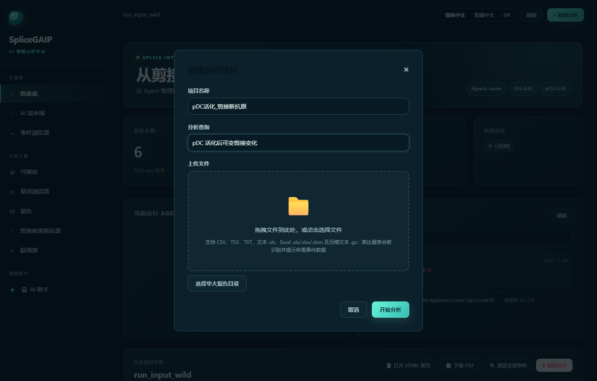
pDC活化_剪接新抗原。不要用空格和斜杠。pDC 活化后可变剪接变化。这句话会作为 AI 解读的输入，写得越具体，解读越贴题。提交后窗口自动关闭，顶部状态条依次变成：上传中… → 智能体正在理解数据结构… → 分析中。此时可以点左侧「AI 流水线」看六个 Agent 的实时进度：数据校验 → 质量控制 → 剪接检测 → 统计建模 → 功能注释 → 生信解读。
这套数据（4771 个事件）实际耗时约 1–3 分钟，主要花在 AI 解读上，取决于大模型响应速度；没配大模型会更快。
什么时候会弹「智能接入检查」？只有上传的表不是 rMATS 标准格式时（例如华大逐样本 OC_001.SE.xls，或自己整理的表格）才会弹窗让你确认列映射和分组，确认后自动转成标准表。用本教程的 rMATS 目录不会弹，直接进分析。
分析完成后回到仪表盘，会看到四张卡：样本 6、剪接事件 4,771、显著事件 24、系统状态"已归档"。这三个数字是后面每一步的起点，也是你验证流程是否正常的第一道标尺。
三层看法：项目详情看全貌，事件浏览器看单条，可视化看图形。
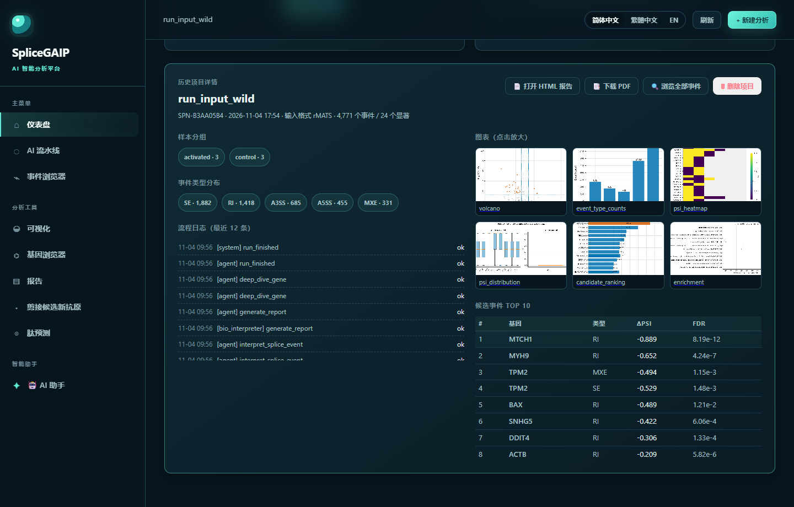
这块区域回答四个问题：样本怎么分组的（activated 3 / control 3）、五类事件各多少个（SE 1,882、RI 1,418、A3SS 685、A5SS 455、MXE 331）、每一步跑了什么、最该关注的十条事件是哪些。右上角四个按钮：打开 HTML 报告 下载 PDF 浏览全部事件 删除项目。
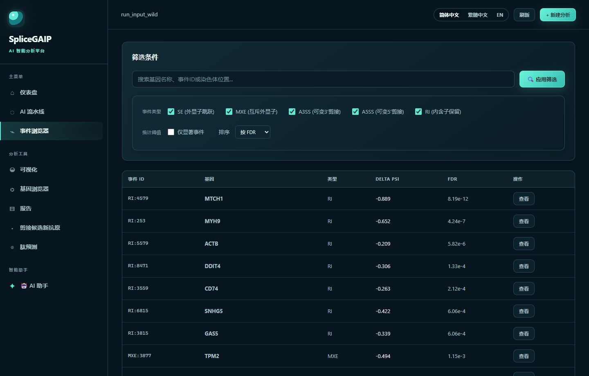
常用操作：在搜索框输入基因名（如 MTCH1）或事件 ID（如 RI:4579）后按回车 → 勾掉不关心的事件类型 → 勾上「仅显著事件」→ 排序选 |ΔPSI| 从大到小。每页 50 条。
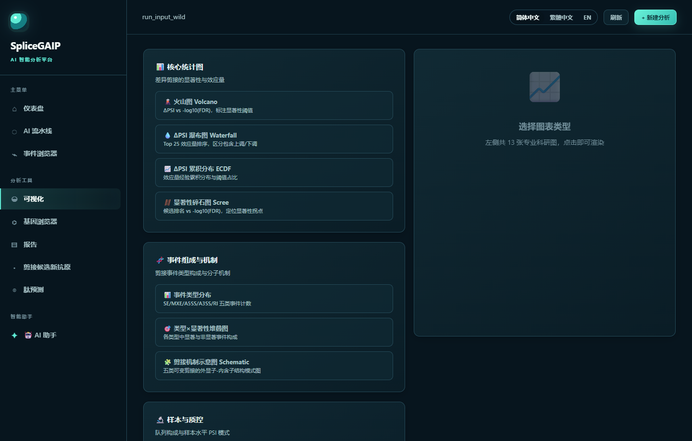
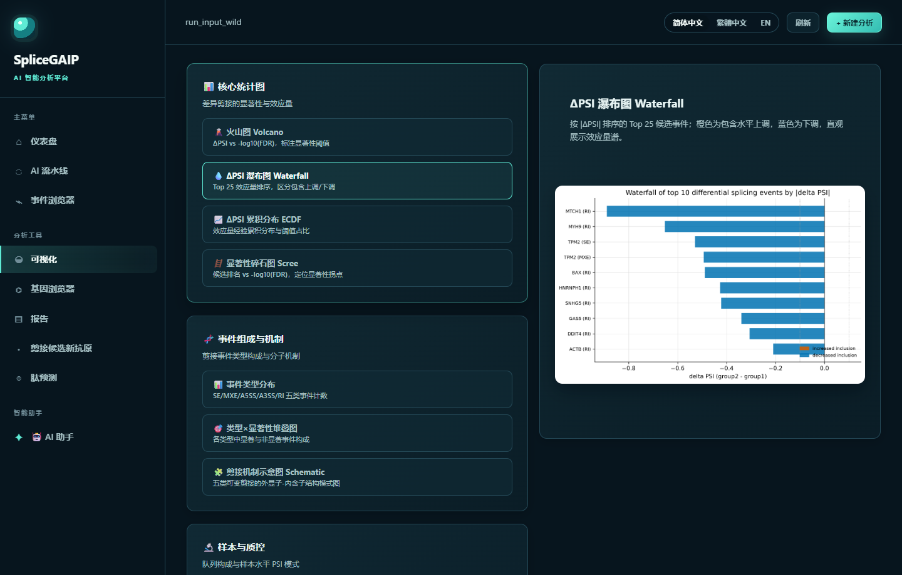
写文章常取的四张：火山图（Volcano）、ΔPSI 瀑布（Waterfall）、PSI 热图（heatmap）、剪接机制示意图（Schematic）。图是实时渲染的，右侧右上角有下载按钮。
点左侧「剪接候选新抗原」。这一页只有两个框：先检查数据，再生成肽。整套流程六小步。
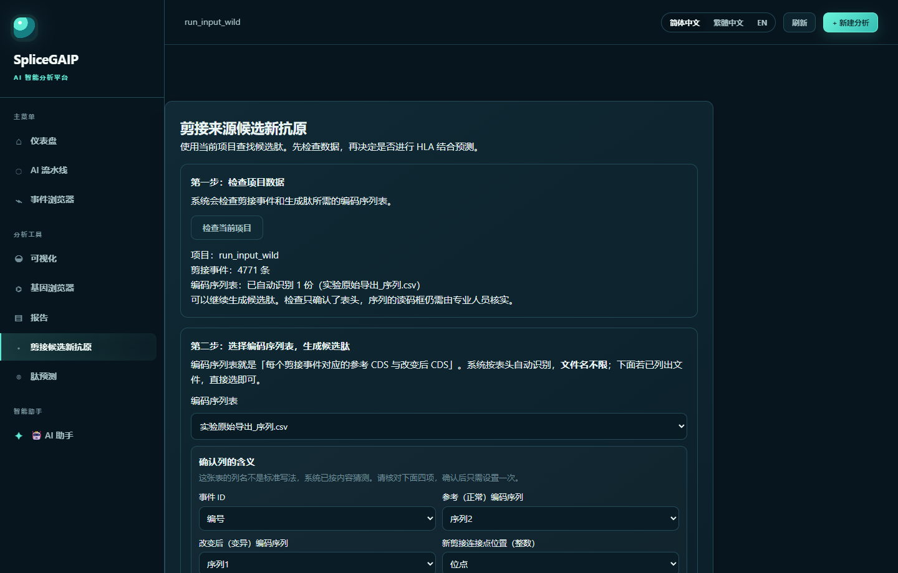
你要看到的是这三行，尤其第三行：
项目：run_input_wild
剪接事件：4771 条
编码序列表：已自动识别 1 份（实验原始导出_序列.csv）
可以继续生成候选肽。检查只确认了表头，序列的读码框仍需由专业人员核实。
如果第三行显示「编码序列表：暂未找到」，不要重跑分析。直接点下面的「从本机添加编码序列表…」把文件补进来，选中后立刻可用。这套设计就是让人不必为了一个表重跑整个项目。
四个角色，缺一不可。注意最后一列是整数，不是序列：
| 角色 | 含义 | 格式要求 |
|---|---|---|
| 事件 ID | 对应分析事件表里的 ID | 如 RI:4579、SE:49301 |
| 参考 CDS | 正常（组成型）剪接下的编码序列 | 5'→3'，只含 A/C/G/T，长度是 3 的倍数 |
| 改变后 CDS | 发生剪接改变后的编码序列 | 同上 |
| 连接点位置 | 新剪接点在改变后 CDS 里的核苷酸边界 | 整数，满足 1 ≤ n < len(altered_cds) |
最小的可跑通例子（产出 8 肽 MAKIYSPD）：
event_id reference_cds altered_cds junction_nt
EV0001 ATGGCCAAGATCTACAGCTGA ATGGCCAAGATCTACAGCCCTGACTGA 18
读法：参考序列译作 MAKIYS；改变后在同样的位置插入了 6 个碱基 CCTGAC，译作 MAKIYSPD。跨过连接点、且不出现在参考蛋白里的肽就被保留下来。
本例的表头是 编号 / 位点 / 序列1 / 序列2——没有任何一个字能提示它是什么。系统会读单元格内容判断：全是 ACGT 且长度是 3 的倍数的列是序列，能和事件表对上的列是事件 ID，整数列是连接点位置；然后用真实数据回放一遍，判断哪列是参考、哪列是改变后（两列顺序颠倒也能纠正）。
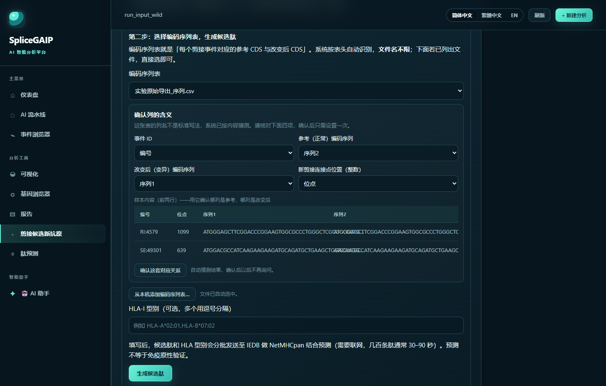
本例自动猜出的对应关系是：
| 系统要的角色 | 猜到的列 | 怎么核对 |
|---|---|---|
| 事件 ID | 编号 | 值形如 RI:4579，与事件表能对上 ✔ |
| 参考（正常）编码序列 | 序列2 | 比 序列1 短，是原始版本 |
| 改变后（变异）编码序列 | 序列1 | 比 序列2 长，多出插入片段 |
| 新剪接连接点位置（整数） | 位点 | 值如 1099，是纯数字 ✔ |
核对无误就点「确认这套对应关系」。系统会先用这套映射试算一遍，一行肽都产不出来时会提示你"参考/改变后可能填反了"。确认成功后写入表同目录的 .cds_mapping.json，同一个项目以后不再询问。
表头是标准写法（event_id / reference_cds / altered_cds / junction_nt）或常见中文（事件ID / 参考序列 / 变异序列 / 连接点）时，这个面板根本不会出现，系统直接进下一步。只有真的猜不准才需要人工确认一次。
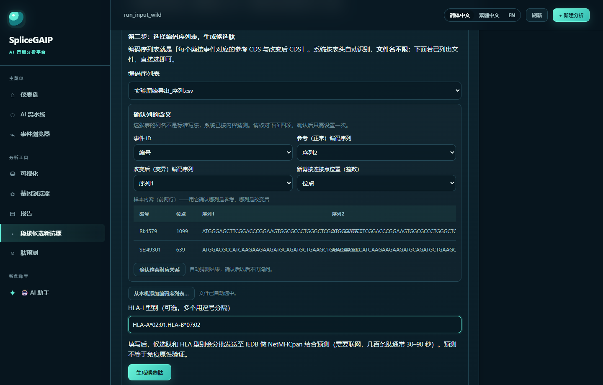
HLA- + A/B/C + * + 两位或三位 + : + 两位，例如 HLA-A*02:01、HLA-B*07:02、HLA-A*24:02。, 分隔：HLA-A*02:01,HLA-B*07:02。按钮变亮后点它。若填了 HLA，状态会显示「正在生成候选肽并查询 IEDB（2 个 HLA 型别，通常 30–90 秒，请勿关闭页面）…」。系统按每批 100 条肽自动分批提交，失败会自动重试，个别肽失败不会让整次运行失败。
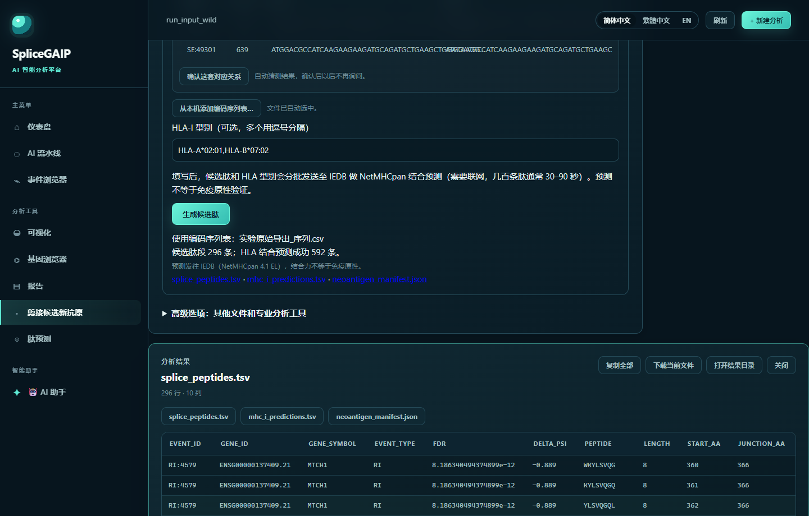
这套数据的真实结果是：
使用编码序列表：实验原始导出_序列.csv
候选肽段 296 条；HLA 结合预测成功 592 条。
592 = 296 条肽 × 2 个 HLA 型别，说明一条都没漏。首次运行约 60 秒；因为结果带磁盘缓存，同样参数再点一次不到 1 秒。
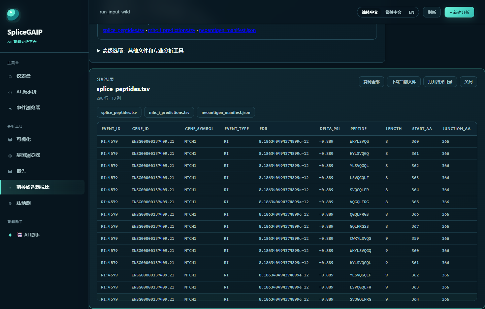
| 文件 | 内容 |
|---|---|
splice_peptides.tsv | 全部候选肽，10 列：事件 ID、基因 ID、基因符号、事件类型、FDR、ΔPSI、肽序列、肽长、起止氨基酸位置 |
mhc_i_predictions.tsv | 每条肽 × 每个型别的预测：score（结合打分）、percentile_rank（百分位排名，越小越强）、原始返回内容 |
neoantigen_manifest.json | 运行清单：用的哪张表、列映射、HLA 型别、样本数、是否截断、失败明细 |
296 条肽覆盖 8 个基因，长度分布 11mer 86 条、10mer 78 条、9mer 70 条、8mer 62 条；来源事件类型 RI 224 条、A5SS 38 条、SE 34 条。
按 percentile_rank 从小到大排，这套真实数据里结合最强的几条是：
| 排名 | 肽段 | HLA 型别 | 百分位 | 判读 |
|---|---|---|---|---|
| 1 | MAYVQRQAV | HLA-B*07:02 | 0.91 | 弱结合 |
| 2 | VLITTDLLGKL | HLA-A*02:01 | 1.20 | 弱结合 |
| 3 | GQLFRGSSLL | HLA-A*02:01 | 1.30 | 弱结合 |
| 4 | YMAYVQRQAV | HLA-A*02:01 | 1.60 | 弱结合 |
| 5 | SLMASEEEYST | HLA-A*02:01 | 1.70 | 弱结合 |
| 6 | IQDQGGWVRL | HLA-A*02:01 | 2.00 | 临界 |
判读口径（IEDB / NetMHCpan 惯例）：百分位 < 0.5% 为强结合，< 2% 为弱结合。这套数据里强结合 0 条、弱结合 5 条（A*02:01 四条、B*07:02 一条）。
这意味着什么，要跟客户说清楚：这套公开数据的最优结果是 0.91% 的弱结合肽，没有强结合。这既可能是真的没有好抗原，也可能是 HLA 型别和样本人群不匹配（这批是 pDC 细胞系数据）。如果要拿去做验证实验，先把这张表按百分位升序排序，取前 10–20 条做多肽合成 + 四聚体或 ELISpot，不要只看第一位。
不需要剪接数据，也不需要 CDS 表。左侧「肽预测」就是干这个的。
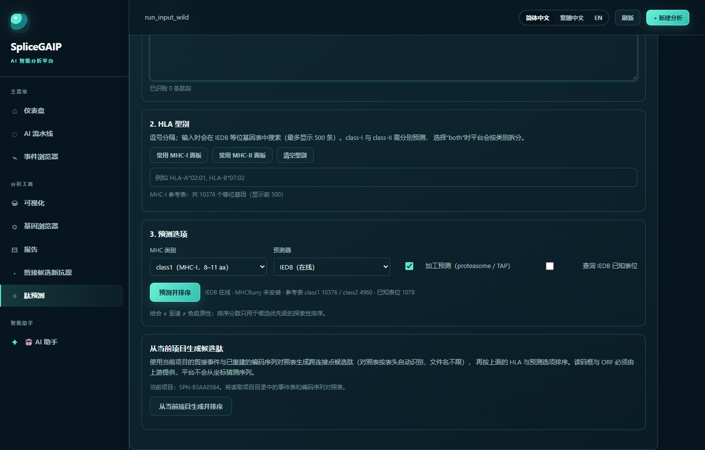
SLYNTVATL。下方会实时显示"已识别 N 条肽段"。class1（MHC-I，8–11 aa），预测器 IEDB（在线）；「加工预测」勾上会额外做蛋白酶体/TAP 加工打分。页面最下面还有一块「从当前项目生成候选肽」：它把事件表 + 编码序列表 + HLA 串成一条线自动跑完，等价于第 5 步的全流程，但结果会带排序和汇总报告，适合重复出报告。
分析跑完后，系统会自动把报告和图复制到 项目根目录下的 results\，一个项目一个文件夹，名字就是「项目名_编号」，直接能看懂：
E:\EpitopeRank\results\
├── pDC活化后剪接变化_SPN-B3AA05B4\
│ ├── report.html ← 双击就能看
│ ├── report.pdf
│ ├── figures\ ← 6 张图，PNG 可进 PPT，SVG 可无损放大
│ └── 项目说明.txt ← 样本数 / 事件数 / 显著数，一眼核对
└── 另一个项目_SPN-XXXXXXXX\
在「历史项目详情」页有三个按钮：📁 成果文件夹（直接在资源管理器打开）、📦 打包 ZIP（压成压缩包，方便发给同事或存云盘）、📄 打开报告。一个项目的全部产物约 4 MB，不会越跑越大——体积大的是历史项目累积的数据库，删项目时一并清掉。
.env 里设 EPITOPERANK_RESULTS_ROOT=D:\某目录 即可。桌面版默认放在 exe 同级的 results\。结果写在项目原始数据目录下的 neoantigen_results/。最省事的办法是点结果面板右上角「打开结果目录」，资源管理器直接定位过去。本例是：
E:\EpitopeRank_data\datasets\data_public\peptide_test\run_input_wild\neoantigen_results\
├── splice_peptides.tsv
├── mhc_i_predictions.tsv
└── neoantigen_manifest.json
| 字段 | 为什么重要 |
|---|---|
workflow_status | 固定为 exploratory_only，表示这是探索性结果——剪接坐标无法唯一确定读码框，必须标注，写文章时也要照实写 |
column_mapping | 这次到底用了哪四列。审稿人问"你怎么知道序列1 是变异后"时，这就是答案 |
prediction_truncated / prediction_errors | 分别为被截断的肽数和失败明细，正常应为 0 |
左侧「报告」→ 生成 HTML 或 PDF。报告覆盖样本构成、五类事件统计、显著事件表与图表。肽结果文件不进报告，需要单独交付上面那三个文件。
照着这张清单逐条核对，能避开九成的失败。
SE.MATS.JC.txt 就是 SE.MATS.JC.txt，改名成大写的 SE.MATS.JC.TXT 也能认，但改成 跳跃.MATS.txt 就认不出。CCTGAC 进去。系统会把它当 0 处理，然后一条肽都产不出来。HLA-A*02:01 这种完整写法。A2、HLA-A2、A0201 都会被拒。prediction_unmatched 和候选数为 0 就能发现。| 你看到的提示 | 原因与处理 |
|---|---|
| 编码序列表：暂未找到 | 目录里确实没有四列齐全的表，或文件超过 64 MB 被跳过。点「从本机添加编码序列表…」单独补 |
| 缺少：变异序列（altered_cds） | 表里少了这一列，或被当成别的角色了。在列映射面板里手动指定 |
| 这套映射一行肽都产不出来 | 十有八九是参考/改变后填反了，把两个下拉对调再试 |
| HLA 型别格式不对 | 检查是否漏了 HLA- 前缀或 * 号 |
| 预测成功 0 条 / 失败若干条 | 外网不通，或 IEDB 临时不可用。看 manifest 的 prediction_errors；肽结果本身不受影响 |
| 上传大文件报 413 | 前面挂了 nginx。加 client_max_body_size 2048m;，或直连 8800 端口 |
MHC-I 呈递的肽段经典长度就是 8–11 个氨基酸（9 mer 最常见），这是生物学约束，不是软件限制。更大的肽走 MHC-II 通路，预测器和判读标准都不一样。
系统不读 rMATS 的 IncLevelDifference 列，而是用 IncLevel2 均值 − IncLevel1 均值 重算，所以和文件里那一列可能有小数位差异。这样做的原因是不同版本 rMATS 对该列定义有过变化。
能。分析、出图、生成肽、HLA 预测全部正常，只有"AI 解读"那段文字会退回规则模板。结果数值不受影响。
方法学部分要写清三点：数据来自 rMATS JC 表；候选肽为探索性生成（读码框依赖上游外显子，仅凭剪接坐标无法唯一确定蛋白序列）；HLA 结合由 IEDB NetMHCpan 4.1 EL 预测，未做实验验证。要做到投稿级，用「剪接候选新抗原 → 高级选项 → 分阶段证据审计」那条七阶段流程，它把读码框、蛋白组过滤、表达过滤逐项做成可审计的证据链。
不会。剪接分析、肽生成都是确定性的；HLA 预测结果来自 IEDB，网络重试可能让个别肽缺失，但已有结果写入磁盘缓存，重复请求会直接命中缓存。
仪表盘历史项目列表可以搜索；进项目详情点右上角「删除项目」会同时删库记录和项目目录，不可恢复，删前先确认报告和结果文件已经导出。